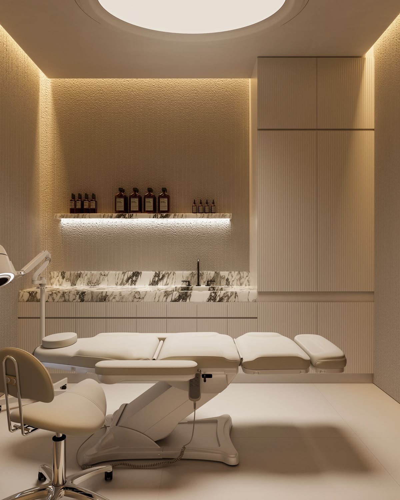
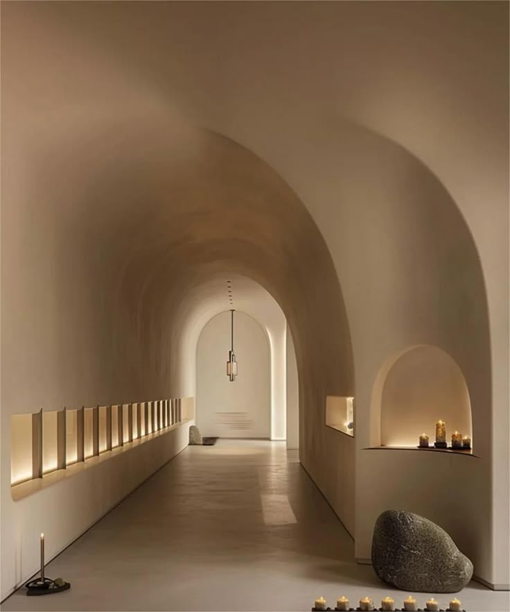

Dermatology
피부과 시술체험단
울쎄라, 써마지, 스킨부스터, 리프팅 등 고관여 시술에 맞는 후기 흐름을 설계합니다.
Dermatology · Plastic Surgery · Medical Device
당신을 기다리는 환자들은 지금 어디에 있나요?
우리는 그들이 모이는 곳에 당신의 자리를 만듭니다.
시술체험단 전문 마케터 우지영
Specialized Field

울쎄라, 써마지, 스킨부스터, 리프팅 등 고관여 시술에 맞는 후기 흐름을 설계합니다.

저가 경쟁을 지우고 병원의 고감도 후기 맥락 설계와 환자의 확신을 끌어내는 신뢰를구축합니다.

장비의 기술력을 인플루언서의 경험으로 시각화하여 환자의 선택을 이끄는 콘텐츠를 설계합니다.
Marketing Menu
인스타 릴스, 블로그 후기, 의료기기 체험단까지 병원 톤에 맞춰 운영합니다.
병원 검색의 첫 화면을 정돈하고 전국구 검색 노출을 관리합니다.
키워드를 잡아 블로그탭과 인기탭에서 병원의 전문성을 보여줍니다.
카페와 커뮤니티의 자연스러운 흐름 안에서 검색 평판을 만듭니다.
지역명, 시술명, 고민 키워드를 조합해 실제 검색 수요를 잡습니다.
중국·일본·영미·동남아 채널별로 다른 확산 방식을 설계합니다.
Experience Seeding
메가부터 나노 인플루언서까지 단순 팔로워 수로 판단하지 않습니다. 병원의 가격대, 시술 특성, 원하는 고객층, 콘텐츠 톤, 2차 활용 가능성을 보고 가장 어울리는 인플루언서를 씨딩합니다.

Global Seeding
해외환자 유치 병원은 국가별 플랫폼 문법이 다릅니다. 중국은 샤오홍슈·따종디엔핑, 일본은 인스타그램·X, 영미권과 동남아권은 인스타그램 중심으로 설계합니다.
Influencer Treatment Video

Content Expansion
단 한 번의 시술 경험을 숏폼, 블로그, 광고 소재, 커뮤니티 후기까지 확장해 병원이 가진 경험의 가치를 반복 노출 가능한 마케팅 자산으로 만듭니다.
Closing Message
병원이 가진 시술의 가치와 원장님의 철학이 필요한 환자에게 닿을 수 있도록, 씨티애드는 검색과 콘텐츠, 체험단과 커뮤니티의 흐름을 함께 설계합니다.
상담 문의하기Consulting Request
피부과, 성형외과, 의료기기, 해외환자 유치 병원이라면 현재 필요한 채널과 체험단 방향을 먼저 정리해드립니다.